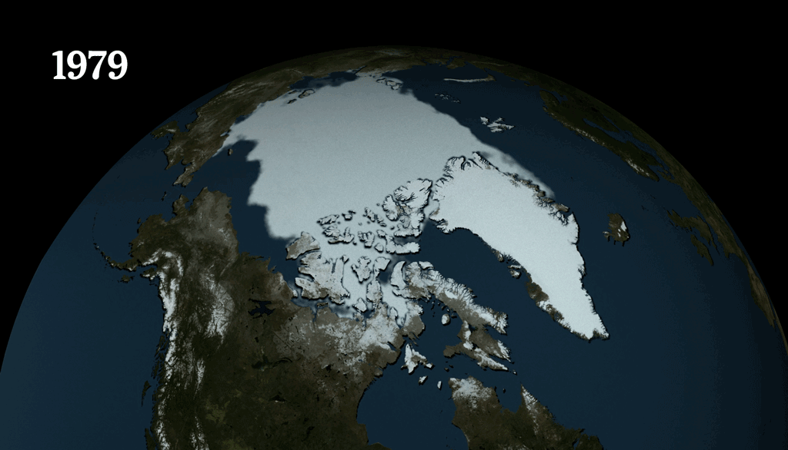
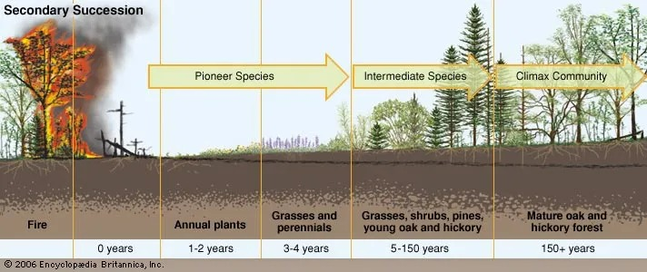
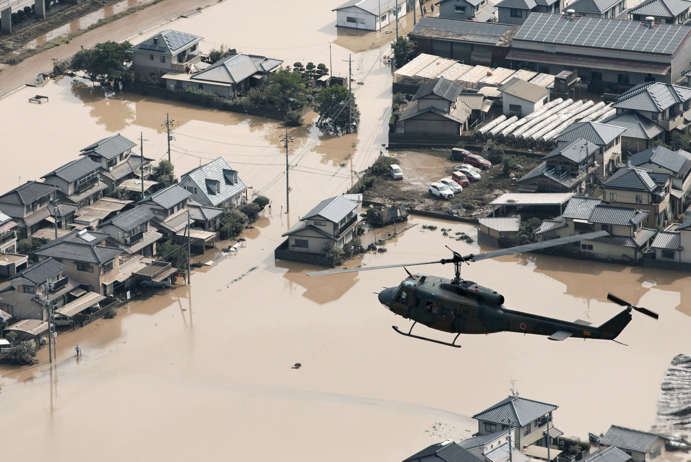
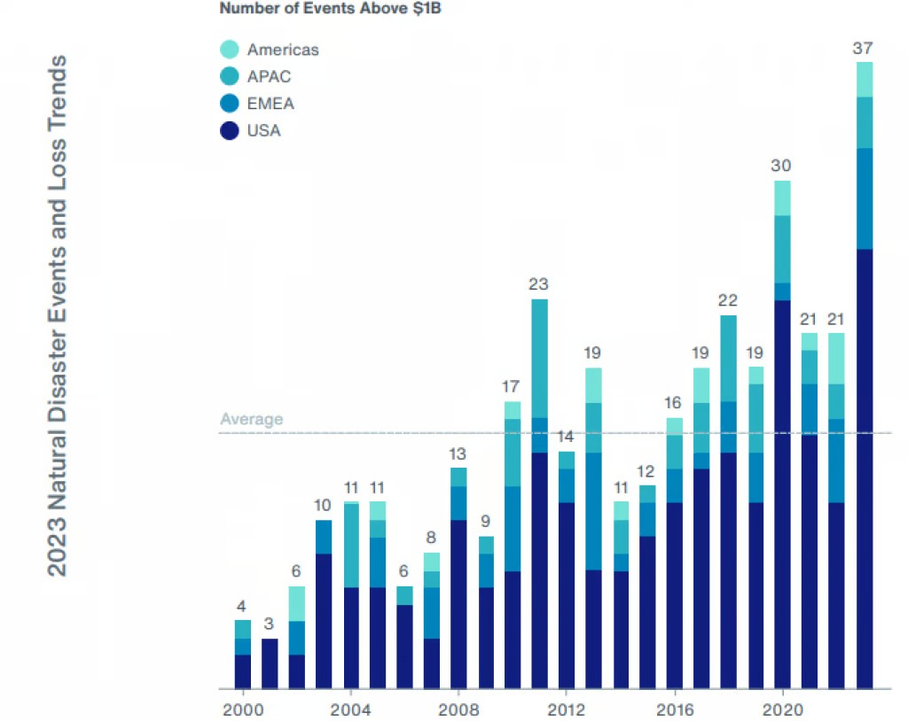
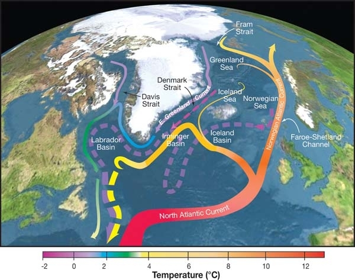
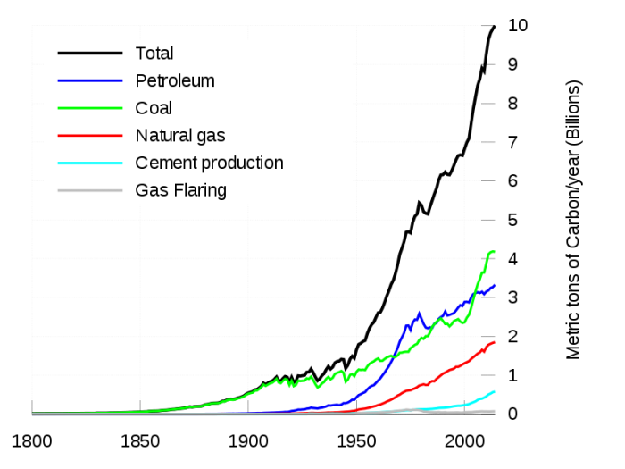
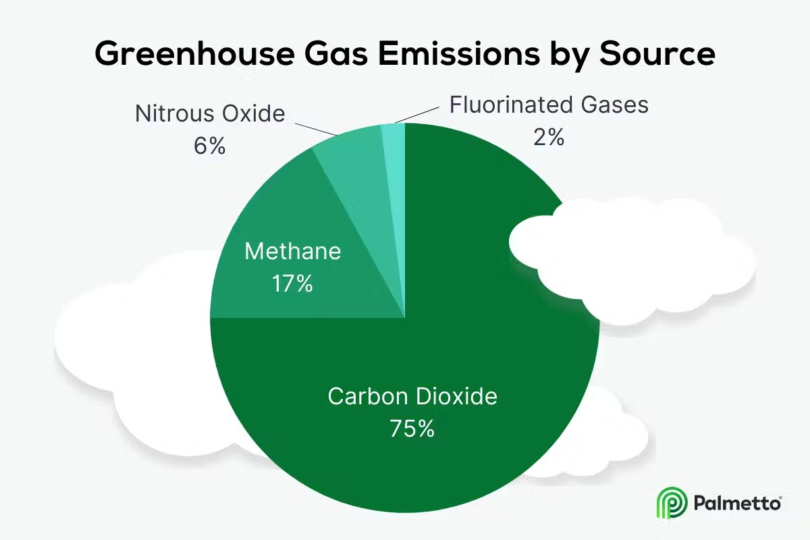
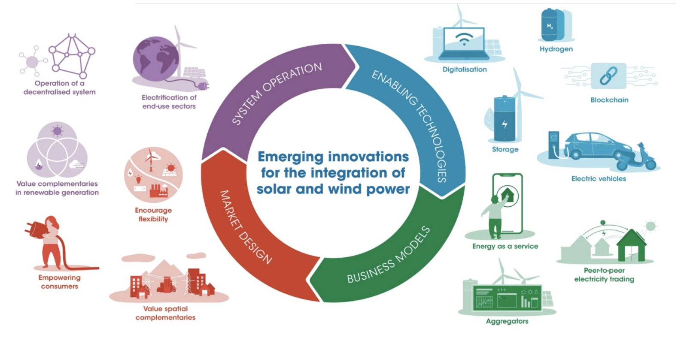
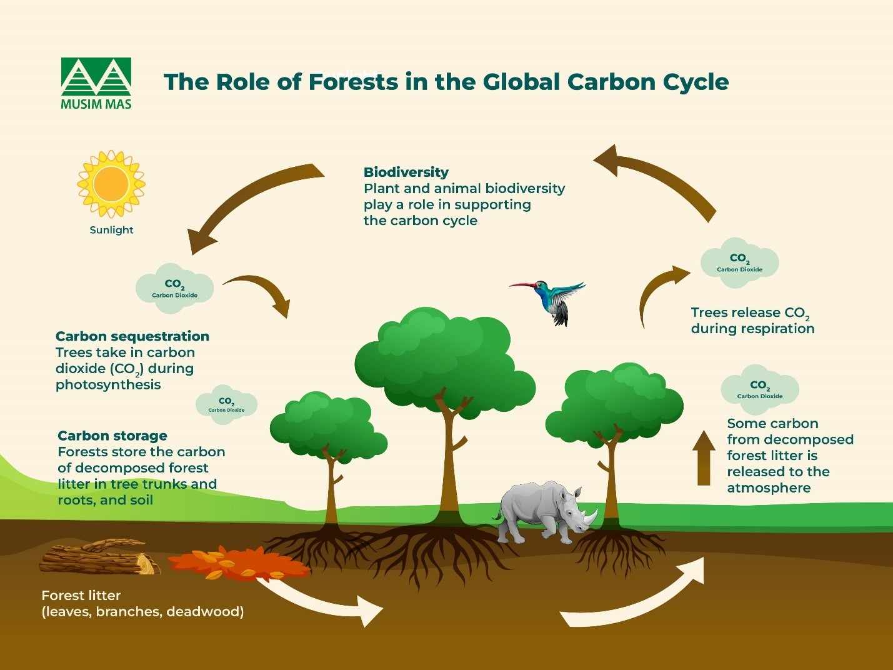

Vanishing Giants: How Climate Change Is Melting Our Glaciers
An interactive climate change narrative
An interactive climate change narrative
Greenhouse gas emissions refer to the release of gases that trap heat in the Earth's atmosphere, leading to global warming and climate change. The main greenhouse gases include carbon dioxide (CO₂), methane (CH₄), nitrous oxide (N₂O), and fluorinated gases. These gases prevent heat from escaping into space, which causes the Earth's temperature to rise, a phenomenon known as the greenhouse effect.
Causes of Greenhouse Gas Emissions:
Burning Fossil Fuels: The combustion of coal, oil, and natural gas for electricity, heating, and transportation is the largest source of CO₂ emissions.
Deforestation: Trees absorb CO₂, so when forests are cut down for agriculture or urbanization, not only is this carbon-absorbing capacity lost, but also the stored carbon is released back into the atmosphere.
Agriculture: Farming activities, particularly livestock production, release methane (CH₄) through animal digestion (enteric fermentation) and nitrous oxide (N₂O) from fertilizers.
Industrial Processes: The production of goods like cement, steel, and chemicals emits CO₂ and other greenhouse gases.
Waste: Decomposition of organic waste in landfills produces methane, while wastewater treatment can release both methane and nitrous oxide.
Transportation: Cars, trucks, planes, and ships burning fossil fuels emit large quantities of CO₂.
From 1997 to 2017, significant glacier melting occurred worldwide, largely influenced by climate change. Here’s a detailed overview of the impacts and developments during this period: Key Observations (1997-2017) Accelerated Melting Rates: Glaciers around the globe experienced rapid melting. Studies indicated that many glaciers in the Himalayas, Alps, Andes, and Arctic regions were losing mass at alarming rates. Mass Loss: The Greenland Ice Sheet lost approximately 3,000 billion tons of ice from 1992 to 2017. Similarly, Antarctica experienced significant ice loss, with estimates suggesting a total loss of around 2,700 billion tons. Temperature Increases: Global temperatures rose, with 2016 being one of the hottest years on record. Warmer temperatures have been a primary driver of accelerated glacier melt. Glacier Retreat: Many glaciers retreated significantly during this period. Iconic glaciers such as the Mer de Glace in the French Alps and glaciers in Glacier National Park in Montana saw notable reductions in size. Impacts of Glacier Melting Rising Sea Levels: Glacier melting contributed to global sea level rise. Between 1993 and 2017, sea levels rose at an average rate of about 3.3 millimeters per year, with a significant portion attributed to the loss of ice from glaciers and ice sheets. Freshwater Supply Challenges: Many regions depend on glacial meltwater for freshwater. Changes in the timing and volume of glacier runoff can lead to water shortages, particularly during dry seasons. For instance, rivers like the Indus and Ganges are heavily influenced by glacial melt. Ecosystem Disruption: Changes in water temperature and flow patterns due to glacial melt affect downstream ecosystems. Species adapted to cold, glacial-fed streams may struggle to survive as conditions change. Natural Hazards: The melting of glaciers increases the risk of glacial lake outburst floods (GLOFs), which can devastate nearby communities. The destabilization of glacial moraines also raises the risk of landslides. Cultural and Economic Impact: Many communities, particularly indigenous groups in regions like the Andes and Himalayas, rely on glaciers for cultural identity and livelihoods. The loss of these glaciers can disrupt traditional practices and economic activities. Feedback Mechanisms: The melting of glaciers exposes darker land or water, which absorbs more heat. This feedback loop accelerates further warming and ice loss. Research and Monitoring Increased efforts in research and monitoring were undertaken during this period, with satellite data and remote sensing technologies allowing scientists to track changes in glacier mass and extent more accurately. Organizations like NASA, the National Snow and Ice Data Center (NSIDC), and various universities contributed to this body of research.
The graph is a pie chart representing the sources of greenhouse gas emissions across various sectors. Here’s a summary of the data presented:
-Transportation: Accounts for the largest share at 28% of total emissions. This indicates a significant contribution to greenhouse gases from vehicles and transport systems.
-Electric Power: Contributes 25% of emissions, highlighting the impact of electricity generation, particularly from fossil fuels.
-Industry: Responsible for 23% of emissions, indicating that industrial processes also play a crucial role in greenhouse gas output.
-Residential and Commercial: Contributes 13%, showing the emissions from heating, cooling, and electricity use in homes and commercial buildings.
-Agriculture: Accounts for the smallest portion at 10%, which includes emissions from livestock, fertilizers, and land use changes.
Overall, the graph illustrates that the sector is the largest emitter, followed closely by electric power and industry. Addressing emissions from these sectors could significantly impact overall greenhouse gas levels.
The second pie chart represents the distribution of greenhouse gas emissions across different sectors, similar to the previous chart but with slightly different values. Here’s a summary of the data:
-Transportation: Accounts for 29% of total emissions, indicating that vehicles and transport systems remain a significant source of greenhouse gases.
-Industry: Represents 30%* of emissions, showing the impact of industrial processes on overall greenhouse gas output.
-Residential and Commercial: Contributes 31% of emissions, which highlights the energy use and related emissions from homes and businesses.
-Agriculture: Accounts for 10%, including emissions from livestock, fertilizers, and land use changes.
Comparison to Previous Chart:
- The Residential and Commercial sector has increased from 13% to 31%, indicating a larger contribution to emissions in this graph.
- The Industry sector has a slight increase from 23% to 30%.
- Transportation has decreased slightly from 28% to 29%.
- Agriculture remains consistent at 10%.
Overall Insight:
In this version, the *Residential and Commercial* sector is now the largest emitter at 31%, followed closely by Industry at 30%, and Transportation at 29%. Addressing emissions from these top sectors could be crucial in efforts to reduce overall greenhouse gas levels.
Sea-level rise is a key consequence of global warming, caused by two main factors:
1. Thermal Expansion : As oceans warm due to higher global temperatures, seawater expands, contributing to rising sea levels.
2. Melting Ice: Glaciers and polar ice sheets, particularly in Greenland and Antarctica, are melting at an accelerating rate. This adds large amounts of water to the oceans, further raising sea levels.
The impacts of sea-level rise include:
- Coastal flooding and erosion, threatening cities and low-lying areas.
- Saltwater intrusion, contaminating freshwater supplies.
- Habitat loss for coastal ecosystems and species.
- The creation of climate refugees, as people are forced to relocate from flood-prone regions.
Without significant action to reduce greenhouse gas emissions, sea levels could rise dramatically by 2100, with devastating global effects.
Sea levels are rising due to two main processes: the thermal expansion of water as it warms and the melting of ice sheets and glaciers. This process is exacerbated by increasing GHG emissions.
From 1997 to 2017, significant glacier melting occurred worldwide, largely influenced by climate change. Here’s a detailed overview of the impacts and developments during this period:
Key Observations (1997-2017)
Accelerated Melting Rates:
Glaciers around the globe experienced rapid melting. Studies indicated that many glaciers in the Himalayas, Alps, Andes, and Arctic regions were losing mass at alarming rates.
Mass Loss:
The Greenland Ice Sheet lost approximately 3,000 billion tons of ice from 1992 to 2017. Similarly, Antarctica experienced significant ice loss, with estimates suggesting a total loss of around 2,700 billion tons.
Temperature Increases:
Global temperatures rose, with 2016 being one of the hottest years on record. Warmer temperatures have been a primary driver of accelerated glacier melt.
Glacier Retreat:
Many glaciers retreated significantly during this period. Iconic glaciers such as the Mer de Glace in the French Alps and glaciers in Glacier National Park in Montana saw notable reductions in size.
Impacts of Glacier Melting
Rising Sea Levels:
Glacier melting contributed to global sea level rise. Between 1993 and 2017, sea levels rose at an average rate of about 3.3 millimeters per year, with a significant portion attributed to the loss of ice from glaciers and ice sheets.
Freshwater Supply Challenges:
Many regions depend on glacial meltwater for freshwater. Changes in the timing and volume of glacier runoff can lead to water shortages, particularly during dry seasons. For instance, rivers like the Indus and Ganges are heavily influenced by glacial melt.
Ecosystem Disruption:
Changes in water temperature and flow patterns due to glacial melt affect downstream ecosystems. Species adapted to cold, glacial-fed streams may struggle to survive as conditions change.
Natural Hazards:
The melting of glaciers increases the risk of glacial lake outburst floods (GLOFs), which can devastate nearby communities. The destabilization of glacial moraines also raises the risk of landslides.
Cultural and Economic Impact:
Many communities, particularly indigenous groups in regions like the Andes and Himalayas, rely on glaciers for cultural identity and livelihoods. The loss of these glaciers can disrupt traditional practices and economic activities.
Feedback Mechanisms:
The melting of glaciers exposes darker land or water, which absorbs more heat. This feedback loop accelerates further warming and ice loss.
Research and Monitoring
Increased efforts in research and monitoring were undertaken during this period, with satellite data and remote sensing technologies allowing scientists to track changes in glacier mass and extent more accurately. Organizations like NASA, the National Snow and Ice Data Center (NSIDC), and various universities contributed to this body of research.
The Glacier Cycle: Formation, Growth, and Melting The glacier cycle refers to the natural process by which glaciers form, grow, shrink, and eventually melt. This cycle involves several key stages that are driven by climatic conditions, especially temperature and precipitation. Here's an overview of how glaciers go through these phases:
1. Formation (Snow Accumulation)
Glaciers form in cold regions where more snow falls in winter than melts in summer. This process typically begins in areas where temperatures remain below freezing year-round, such as high mountains or polar regions. The glacier formation process involves several steps:
-Snow Accumulation: Snow piles up in these areas over time. The snow doesn’t melt completely during warmer months, leading to an accumulation year after year.
-Compaction: Over time, the layers of snow get compacted under their own weight. As more snow accumulates, the layers below become compressed and gradually transform from loose snowflakes into a denser form of snow known as firn.
-Transformation into Ice: After many years of compression, firn eventually becomes dense, granular ice. When the pressure continues to increase, it turns into solid glacier ice, which is much denser than snow and firn.
2. Growth (Glacier Movement and Accumulation Zone)
Once a glacier forms, it can grow larger if conditions allow. This happens primarily in the *accumulation zone*, the upper part of the glacier where more snow falls than melts. As new snow layers are added on top, the weight forces the ice to move downhill or spread outward under the force of gravity.
-Glacier Movement: As glaciers accumulate more ice, they start to move slowly downhill or outward. This movement happens in two ways:
-Internal Deformation: The ice deep within the glacier becomes pliable and moves slowly due to its own weight.
-Basal Sliding: The glacier can also slide over the ground below it, lubricated by meltwater at its base.
-Crevasses and Ice Flow: As glaciers move, they can develop cracks or crevasses due to stress. The ice can also flow into valleys, forming valley glaciers or spreading across large areas, forming ice sheets.
The impacts of glacier melting are wide-ranging, affecting both natural environments and human communities across the globe.
-Rising Sea Levels: One of the most immediate consequences of glacier melt is the rise in sea levels. As glaciers, particularly those in Greenland and Antarctica, melt, they add more water to the oceans. The UN's Intergovernmental Panel on Climate Change (IPCC) projects that by 2100, sea levels could rise by 0.6 to 1.1 meters (2-4 feet), threatening low-lying coastal cities like New York, Tokyo, and Dhaka.
-Freshwater Availability: Many regions, especially in Asia, South America, and Europe, rely on glaciers as a key source of freshwater. In the Andes and the Himalayas, glacier melt provides water for millions during the dry season. As glaciers recede, this essential water supply becomes less reliable, leading to potential shortages in the future.
-Ecosystem Disruption: Glacier-fed rivers support unique ecosystems, providing cold, oxygen-rich waters that sustain fish, birds, and other wildlife. As glaciers melt, these rivers become warmer and less stable, leading to the loss of biodiversity. Polar ecosystems, including species such as polar bears, seals, and penguins, are particularly affected as the ice they depend on for hunting, breeding, and survival disappears.
-Weather Extremes: Melting glaciers contribute to changing atmospheric and oceanic circulation patterns. This can lead to more extreme weather events like flooding, storms, and droughts. For example, the disruption of the Atlantic Meridional Overturning Circulation (AMOC), a key ocean current affected by melting glaciers, could lead to harsher winters in Europe and more intense heatwaves in North America.

1. Rising Sea Levels One of the most immediate and significant impacts of glacier melting is the rise in sea levels. As glaciers, particularly in Greenland and Antarctica, lose ice mass, they release enormous amounts of freshwater into the oceans. Contribution to Global Sea-Level Rise: Glaciers and ice sheets are responsible for about two-thirds of global sea-level rise. The IPCC estimates that sea levels could rise by 0.6 to 1.1 meters by 2100 if current melting rates persist. Threat to Coastal Cities: Coastal areas around the world are at risk of flooding due to rising sea levels. Cities such as Miami, New York, Jakarta, and Dhaka are particularly vulnerable, with millions of people living in these areas facing displacement. Saltwater Intrusion: As sea levels rise, saltwater can infiltrate freshwater aquifers, contaminating drinking water supplies in coastal regions.

2. Water Resource Depletion
Glaciers are crucial sources of freshwater for many parts of the world, especially during dry seasons when snowmelt sustains rivers and lakes. As glaciers shrink, this vital source of freshwater diminishes.
Impact on Water Supply: Regions such as South Asia (fed by the Himalayas), South America (the Andes), and parts of Europe (the Alps) rely on glacier melt to maintain water flow in rivers. These glaciers act as "natural reservoirs," and their loss threatens water security for millions of people, especially in agriculture-dependent regions.
Reduced River Flows: Over time, as glaciers disappear, the rivers they feed will see reduced flows, potentially leading to water shortages for farming, drinking water, and hydropower.
3. Ecosystem Disruption
Glaciers and the rivers they feed support unique ecosystems. These ecosystems are finely tuned to cold, glacier-fed waters, and as glaciers melt, they face significant disruptions.

Cold-Water Ecosystems: Many fish species, including salmon and trout, thrive in the cold waters provided by glaciers. As these water sources warm up due to glacier loss, species that rely on these conditions for spawning and survival may struggle or even become extinct.
Polar Wildlife: In polar regions, species such as polar bears, seals, and penguins depend on glaciers and sea ice for hunting and breeding. As ice habitats disappear, these species face shrinking living spaces and increased competition for resources. Polar bears, for example, are struggling to find food as the Arctic ice melts, reducing their ability to hunt seals.
The melting of glaciers due to climate change is a major concern with profound and far-reaching consequences. Expanding on the points you've mentioned, additional details can provide a clearer picture of the catastrophic potential:
1. Displacement of Populations  Increased Flooding: Coastal areas, particularly in densely populated regions such as Bangladesh, the Netherlands, and small island nations, are at high risk from rising sea levels. Storm surges and higher tides will worsen the severity of coastal flooding, making some areas uninhabitable. Loss of Livelihoods: Communities reliant on coastal ecosystems, like fishing or agriculture, may face economic devastation. For instance, saltwater intrusion into freshwater systems due to sea level rise will degrade farmland and water sources, pushing populations to migrate. Urban Stress: Large cities, especially megacities situated on coasts (e.g., New York, Mumbai, and Shanghai), would have to invest heavily in adaptation infrastructure (e.g., sea walls), and still, a portion of the population could be displaced, leading to massive urban migration and pressure on resources.
2. Economic Impact  Agricultural Disruption: In regions such as the Himalayas and Andes, farmers rely on glacial meltwater to irrigate crops. As glaciers retreat, water availability becomes erratic, leading to droughts in critical growing seasons, which would hurt food security. With less predictable water flows, productivity in these areas could drastically decline. Hydropower Depletion: Glaciers provide a steady flow of meltwater that sustains hydroelectric dams, especially in places like Norway and the Himalayas. A reduced glacial flow will mean less reliable energy, forcing regions to rely more heavily on fossil fuels, exacerbating climate issues. Tourism Decline: Destinations renowned for their glaciers (e.g., Alaska, Iceland, Patagonia, the Alps) depend on tourism. As glaciers shrink or disappear, these locations lose their natural allure, leading to diminished tourism revenues and unemployment in the tourism sector. Infrastructure Damage: Glacier retreat also causes permafrost to thaw, destabilizing buildings, roads, and pipelines in polar and alpine regions, leading to massive repair and replacement costs.
3. Ecosystem Collapse Aquatic Ecosystem Disruption: Many fish species, such as salmon, rely on cold, glacial-fed rivers to reproduce. Warmer water from glacier loss stresses these species, leading to a decline in their populations. This in turn affects predators (e.g., bears, birds), disrupting entire food chains. Loss of Freshwater Supply: Glaciers act as natural water reserves. They slowly release fresh water, especially in dry seasons, sustaining rivers that are essential for drinking water and agriculture. Without glaciers, the availability of fresh water could become increasingly erratic, threatening communities and wildlife. Altered Weather Patterns: Glacier loss could disrupt regional climates, particularly in mountainous areas. With less snow and ice reflecting sunlight, more heat will be absorbed by exposed ground (the albedo effect), accelerating warming and altering precipitation patterns, potentially intensifying droughts and monsoons.
4. Sea Level Rise & Global Impact Sea Level Rise Acceleration: Continued glacier melting is a major contributor to rising sea levels, alongside the melting of ice sheets in Greenland and Antarctica. Even a small increase in sea level rise will disproportionately affect low-lying nations, potentially causing entire countries to submerge, exacerbating geopolitical tensions as nations fight for resources and territory. Oceanic Changes: As glaciers melt, massive volumes of freshwater are introduced into the oceans, disrupting ocean currents like the Atlantic Meridional Overturning Circulation (AMOC). This could lead to significant shifts in global climate, affecting everything from heat distribution to rainfall patterns.
What is AMOC?
The AMOC is a large system of ocean currents in the Atlantic Ocean that transports warm, salty water from the tropics northward to the North Atlantic, where it cools and becomes denser, sinking and then returning southward at deeper ocean layers. This process is a vital part of the global ocean conveyor belt.
Warm Water Flow: Surface currents carry warm, saline water northward, primarily through the Gulf Stream.
Deep Water Formation: In regions like the Labrador Sea and the Nordic Seas, the warm water cools and becomes denser, sinking to form deep water masses.
Return Flow: The cold, dense water flows southward at great depths, eventually rising again in other parts of the ocean, completing the cycle.
Importance of AMOC
Climate Regulation: AMOC plays a critical role in regulating climate, especially in Europe and North America. The heat transported by AMOC contributes to milder winters in these regions.
Climate Regulation: Changes in AMOC can influence weather patterns, including storm tracks and precipitation patterns, potentially leading to extremes such as droughts or heavy rainfall.
Carbon Cycle: AMOC helps sequester carbon dioxide in the deep ocean, playing a role in regulating atmospheric CO2 levels and, thus, global warming.
Current State and Concerns
Warming and Weakening: There is growing concern that AMOC is weakening due to climate change, particularly due to the influx of freshwater from melting ice sheets and glaciers, which can disrupt the salinity and density-driven processes that drive AMOC.
Potential Consequences: A significant slowdown of AMOC could lead to:
Colder winters in Europe.
Sea-level rise along the U.S. East Coast.
Disruption of ecosystems and fisheries.
Altered weather patterns, leading to more extreme weather events.
>Future Projections
Climate models predict varying degrees of AMOC weakening in response to ongoing climate change, but there is uncertainty about the timeline and extent. Some studies suggest a risk of collapse within this century if greenhouse gas emissions continue at current rates.
The Atlantic Meridional Overturning Circulation (AMOC) is a critical component of the Earth's climate system, moving warm water from the tropics to the North Atlantic and driving the ocean's global conveyor belt. If AMOC were to significantly slow down, the consequences could be severe, potentially triggering widespread climate shifts. Here's a scientific and hypothetical explanation of what might occur:
1. Changes in North Atlantic and European Climate
AMOC plays a crucial role in moderating the climate of Western Europe, especially by transporting warm waters from the Gulf of Mexico (via the Gulf Stream) to higher latitudes. A slowdown or collapse of AMOC could have the following impacts:
Colder Winters in Europe: Without the warm currents from the Gulf Stream, Northern and Western Europe could experience much colder winters, with a climate more akin to regions at similar latitudes in Canada. This is because AMOC helps to maintain Europe’s relatively mild climate by bringing heat from the tropics.
Extreme Weather: A weaker AMOC would alter atmospheric patterns and lead to more extreme weather conditions. For example, colder winters could be punctuated by hotter, more extreme summers, along with increased frequency of storms and flooding.
Hypothetical Scenario: Cities like London, Paris, and Berlin, which are relatively temperate for their latitude, could experience long-lasting freezes and snowstorms akin to regions near the Arctic Circle. Agricultural cycles could be disrupted by this unpredictability, leading to crop failures and food shortages across Europe.
2. Global Disruption of Weather Patterns
AMOC has a broad influence on global climate by regulating the exchange of heat between the tropics and the poles. A significant slowdown would disrupt global weather patterns, potentially leading to:
Shifting Monsoons: AMOC's strength affects the position and strength of the Intertropical Convergence Zone (ITCZ), which influences monsoon systems in regions like Africa and South Asia. A weakening AMOC could reduce monsoon rains, leading to droughts in areas that depend on seasonal rainfall, like India and sub-Saharan Africa.
Increased Heat in the Tropics: With less heat being transferred northward, the tropical regions could become hotter. This could exacerbate heatwaves and reduce the capacity for heat dissipation in the tropics, stressing ecosystems, agriculture, and human health.
Hypothetical Scenario: Countries in sub-Saharan Africa and parts of India could see their agricultural systems collapse due to extended droughts, while tropical regions like Southeast Asia may experience unbearable heat, increasing the risk of mass migration and resource conflicts.
3. Sea-Level Rise Along the Eastern United States
AMOC acts as a regulator for sea levels, particularly along the eastern coast of North America. As AMOC slows down, less water is transported northward, causing water to "pile up" along the Eastern Seaboard. This would result in:
Accelerated Sea-Level Rise: Cities along the US East Coast, including New York, Boston, and Miami, could see a faster rise in sea levels. In some projections, a significant slowdown of AMOC could result in an additional sea-level rise of 1 to 3 feet in these regions.
Increased Coastal Flooding: With a faster rise in sea levels, coastal cities would be at higher risk of flooding during storms and high tides, making storm surges more devastating. The infrastructure costs for protecting these cities would skyrocket.
Hypothetical Scenario: Cities like New York and Miami could experience more frequent and severe flooding, with some areas becoming uninhabitable by the end of the century. Massive investments in coastal defenses might not be enough to prevent large portions of the population from relocating inland.
4. Impact on Marine Ecosystems
AMOC plays a role in nutrient cycling by driving deep ocean currents and upwelling in the North Atlantic, which supports rich marine ecosystems. A slowdown could lead to:
Reduced Nutrient Supply: Slower circulation means less mixing of surface and deep waters, reducing the upwelling of nutrients that support plankton, the base of the marine food chain. This would affect fisheries in the North Atlantic and the Arctic, reducing fish stocks and harming marine biodiversity.
Impact on Cold-Water Coral Reefs: Cold-water coral reefs that thrive in nutrient-rich, deep, cold waters could be severely impacted. These ecosystems provide habitat for many species, and their loss could reduce biodiversity in the North Atlantic.
Hypothetical Scenario: Fisheries in the North Atlantic could collapse, leading to economic and food security issues for countries like Norway, Canada, and the UK, where seafood is a major industry. Loss of cold-water coral reefs would have cascading effects on marine biodiversity, possibly leading to extinctions.
5. Greenland Ice Sheet Melting
AMOC also helps stabilize the climate around Greenland by drawing warm water away from the Arctic. If AMOC slows significantly, it could lead to:
Accelerated Melting of Greenland's Ice: Without the current drawing warm water away, the surrounding waters could warm, accelerating the melting of the Greenland ice sheet. This would further contribute to sea-level rise.
Feedback Loop: As the ice melts, more freshwater enters the North Atlantic, further slowing AMOC in a dangerous feedback loop. Freshwater is less dense than saltwater and disrupts the sinking of cold, salty water that drives the AMOC, perpetuating its slowdown.
Hypothetical Scenario: The Greenland ice sheet could melt at an unprecedented rate, leading to catastrophic sea-level rise (up to 7 meters in extreme scenarios). Coastal cities around the world would be submerged, leading to widespread displacement of millions of people and massive economic loss.

6. Disruption of the Carbon Cycle
The ocean plays a key role in absorbing carbon dioxide (CO2) from the atmosphere. AMOC contributes to this process by transporting surface waters, which have absorbed CO2, into the deep ocean where the carbon is sequestered. A slowdown of AMOC would:
Reduce CO2 Absorption: With weaker circulation, less CO2 would be transported to the deep ocean, allowing more to remain in the atmosphere, thus accelerating global warming.
Ocean Acidification: A slowdown in nutrient cycling and the ocean’s capacity to absorb CO2 could exacerbate ocean acidification, threatening marine species, particularly shell-forming organisms like corals, mollusks, and some plankton.
Hypothetical Scenario: A vicious feedback loop could form where the weakened AMOC leads to higher atmospheric CO2, faster warming, and even more AMOC slowdown. Ocean acidification could cause a collapse in marine ecosystems, affecting fisheries and global food supplies.
Here’s a detailed breakdown of the solutions to mitigate glacier melting under several key subtopics:
The most critical long-term solution to slowing glacier melt is reducing greenhouse gas (GHG) emissions, especially carbon dioxide (CO₂) and methane (CH₄), which are the primary drivers of global warming. Addressing these emissions will help reduce global temperatures and prevent further glacier loss.
-Transition to Renewable Energy:
-Wind, Solar, and Hydropower: Replacing fossil fuels with renewable energy sources is one of the most effective ways to reduce GHG emissions. Renewable energy sources, such as solar, wind, and hydropower, produce electricity without emitting CO₂. Governments must invest in the infrastructure needed to expand the use of these technologies.
-Investment in Clean Energy: Governments and corporations should accelerate investment in clean energy technologies to reduce dependency on coal, oil, and natural gas. Expanding clean energy grids can help reduce carbon emissions from power generation.
-Phasing Out Fossil Fuels:
-Carbon Pricing: Introducing policies such as carbon taxes or cap-and-trade systems makes it more costly to emit carbon, encouraging industries to invest in cleaner technologies. This financial incentive will push corporations to adopt low-carbon practices and energy efficiency measures.
-Fossil Fuel Divestment: Financial institutions can play a role by divesting from fossil fuel projects and investing in renewable energy. This reduces the flow of capital to industries that contribute the most to global warming.

-Energy Efficiency:
-Upgrading Infrastructure: Enhancing energy efficiency in buildings, transportation, and industrial processes can significantly cut energy consumption and emissions. Improving insulation, adopting energy-efficient appliances, and shifting to electric vehicles (EVs) are important steps to lower the carbon footprint.
-Smart Grids and Electrification: Transitioning to smart energy grids that optimize energy use and encouraging the electrification of industries and transportation will further reduce GHG emissions.
-Reforestation and Carbon Capture:
-Reforestation: Forests are natural carbon sinks, absorbing CO₂ from the atmosphere. Large-scale reforestation and afforestation efforts, especially in degraded areas, can help absorb carbon and slow global warming.
-Carbon Capture and Storage (CCS): CCS technologies capture CO₂ emissions from power plants and industrial processes and store them underground. Though still in its early stages, CCS has the potential to capture up to 90% of CO₂ emissions from large industrial sources, thus reducing their impact on the climate.
2. Adaptation Strategies
While reducing emissions is essential, we must also adapt to the effects of glacier melting, as some impacts are already inevitable. Adaptation strategies focus on mitigating the impacts of reduced glacier mass and securing water resources for the future.
-Water Management and Conservation:
-Building Reservoirs: Communities that rely on glacier-fed rivers for water can build reservoirs and storage systems to capture meltwater during wet seasons for use during dry periods. This can help manage water availability more effectively as glaciers continue to shrink.
-Rainwater Harvesting: In areas affected by reduced glacier-fed water supplies, encouraging rainwater harvesting and improved irrigation systems can enhance water availability for agriculture and domestic use.
-Desalination: Coastal regions facing water scarcity due to glacier loss may invest in desalination plants to convert seawater into freshwater. While energy-intensive, advancements in technology are making desalination more efficient.
-Developing Early Warning Systems for Floods:
- Glacial Lake Outburst Floods (GLOFs): GLOFs are sudden and catastrophic floods caused by the collapse of glacial lakes. To protect vulnerable communities, governments should invest in early warning systems and monitoring technologies to predict GLOFs and reduce the risk of sudden flooding events.
- Protective Infrastructure: Building flood defenses such as levees, dams, and barriers in areas prone to glacial floods can reduce the damage caused by these events.
-Agricultural Adaptation:
- Drought-Resistant Crops: In regions where water scarcity is becoming a major issue due to glacier loss, governments and farmers should invest in research and development of drought-resistant crop varieties that require less water and can withstand more extreme weather conditions.
- Efficient Irrigation: Implementing efficient irrigation techniques like drip irrigation or sprinkler systems can help conserve water in agriculture, ensuring more sustainable crop production even with reduced glacier-fed water supplies.
3. Conservation Efforts
Localized conservation measures can help slow the rate of glacier melt by addressing specific environmental issues that contribute to the warming of glaciers.
-Reducing Black Carbon Emissions:
- What is Black Carbon?: Black carbon, or soot, is a pollutant that results from the incomplete combustion of fossil fuels, biofuels, and biomass. When black carbon settles on glacier surfaces, it reduces the glaciers' reflectivity (albedo), causing them to absorb more heat and melt faster.
- Cleaner Technologies: Reducing emissions of black carbon from diesel engines, cookstoves, and industrial processes can help slow glacier melt. Transitioning to cleaner cooking technologies, improving vehicle emissions standards, and using cleaner fuels will reduce the amount of black carbon that settles on glaciers.
-Protected Areas for Glaciers:
- Conservation Zones: Governments can designate glaciers and their surrounding environments as protected conservation areas, reducing local human activities such as mining, tourism, and industrial development that may accelerate glacier melting.
- Pollution Control: Strengthening pollution control measures near glacier regions will reduce the impact of local pollutants, including chemical runoff from agriculture and industrial waste, on glacial ecosystems.
-International Research Collaboration:
- Glacier Monitoring: Establishing global research networks to monitor glacier health, map changes, and predict future impacts can help countries better prepare for the consequences of glacier loss. Advanced satellite technology and field research stations provide critical data to track glacier changes over time.

4. International Cooperation and Climate Agreements
Given that climate change is a global issue, international cooperation is essential for solving the glacier melt crisis. Countries must work together to establish and enforce climate policies.
-Paris Climate Agreement:
- Global Temperature Goals: The Paris Climate Agreement, signed by nearly 200 nations, aims to limit global temperature rise to well below 2°C above pre-industrial levels and to pursue efforts to limit the increase to 1.5°C. Achieving this goal is crucial for slowing the rate of glacier melt.
- Nationally Determined Contributions (NDCs): Countries have pledged to reduce their greenhouse gas emissions through NDCs, which are individual commitments to climate action. These commitments are revised every five years to become more ambitious as technology improves and awareness increases.
- Financing Climate Action:
- Green Climate Fund (GCF): Wealthier nations have pledged to contribute to the GCF, which supports climate adaptation and mitigation projects in developing countries. This funding helps vulnerable nations implement clean energy projects, adapt to climate change, and protect against the impacts of glacier melting.
- Technology Transfer: Developing countries often lack the resources and technology needed to combat climate change effectively. Wealthier nations can provide financial support and technological expertise to help these countries transition to cleaner energy sources and implement glacier monitoring systems.
- Regional Cooperation:
- Shared Glacier Resources: In areas like the Himalayas or the Andes, multiple countries share glacier-fed rivers. Regional cooperation on water management, conservation, and flood control is essential to ensure that all countries involved have access to water resources and can manage glacial risks effectively.
- Cross-Border Environmental Agreements: Countries that share glacier systems need to develop cross-border environmental policies, ensuring that conservation and pollution control efforts are coordinated across national boundaries.

5. Public Awareness and Behavioral Change
Public awareness and behavioral changes are crucial to driving the social and political momentum needed to address glacier melting.
- Education Campaigns:
- Climate Education: Schools, universities, and public institutions should incorporate climate education into their curricula to raise awareness of the causes and consequences of glacier melt. Educated citizens are more likely to adopt sustainable behaviors and push for policy change.
- Media and Advocacy: Governments and environmental organizations should use the media to highlight the importance of glaciers and the dangers of their melting. Campaigns showcasing the impacts of glacier loss can spur public demand for climate action.
- Individual Action:
- Reducing Carbon Footprint: Individuals can contribute to slowing glacier melt by reducing their own carbon footprint. This includes adopting energy-efficient appliances, using public transportation, reducing waste, and supporting renewable energy sources.
- Sustainable Tourism: Tourists who visit glacier regions should practice sustainable tourism by minimizing their impact on the environment, adhering to local conservation guidelines, and choosing eco-friendly travel options.
The project you’re working on has a vital goal of raising awareness about one of the most visible and pressing consequences of climate change: **rising sea levels**. Coastal communities around the world are already feeling the effects of this, and your project aims to highlight these impacts using both data and narratives to create a compelling case for immediate action. Here's an elaboration on this approach:
1. Highlighting the Scientific Basis
-Data Presentation: By leveraging data from sources like the US GHG Center and other climate research organizations, the project will illustrate the hard facts of sea level rise—tracking historical trends, current conditions, and future projections. This data can include:
-Rate of Sea-Level Rise: Showing how sea levels have been rising over recent decades due to the melting of glaciers, ice sheets, and thermal expansion of seawater.
-Projected Scenarios: Presenting possible future scenarios based on different levels of global warming, emphasizing that rising temperatures correlate with more rapid sea-level rise.
- Affected Areas: Mapping the coastal regions at greatest risk, from small island nations to major cities like New York, Miami, and Mumbai, providing a clear visual of areas facing the highest threat.
2. Coastal Community Impacts
The human side of climate change is equally important, as it brings the data to life. The project can explore the direct and indirect consequences that rising sea levels have on coastal communities:
-Displacement of Populations: The project can use stories and examples of people who have already been displaced due to sea level rise or are at high risk of becoming climate refugees. For example, island nations in the Pacific, such as the Maldives and Kiribati, are facing existential threats due to rising waters. Presenting case studies from these areas will humanize the data.
-Economic Strain: The project can demonstrate how coastal businesses, tourism, and fishing industries are suffering, and how this will worsen as rising seas encroach further inland. Additionally, it could examine the financial burden on cities and governments to build defenses like seawalls and barriers or relocate entire communities.
-Cultural and Historical Losses: Some communities face the potential loss of cultural heritage, such as historical buildings, landmarks, and sacred sites that are at risk of being submerged or eroded by rising tides.
3. Narratives to Inspire Change
By weaving in narratives from real people affected by rising sea levels, the project can make the impacts of climate change more relatable and emotionally engaging. These could include:
-Personal Testimonies: Interviews with individuals from coastal areas, showcasing how their lives are already being affected or how they are preparing for the inevitable impacts of sea level rise.
-Community Resilience Stories: Highlighting stories of communities that are adapting to these changes, such as villages building floating homes, cities investing in green infrastructure, or countries creating early-warning systems for floods and storms. These narratives can offer hope and showcase that while the challenges are great, there are innovative solutions being pursued.
4. Call to Action: Mitigation and Adaptation
The goal is not only to inform but also to inspire action. The project should emphasize that rising sea levels are a consequence of human-driven climate change, particularly through activities that increase greenhouse gas emissions. Mitigation efforts should be front and center:
-Reducing Carbon Emissions: Encouraging individuals, businesses, and governments to adopt policies and technologies that reduce reliance on fossil fuels, promote renewable energy, and increase energy efficiency. Present examples of how cutting emissions can slow the pace of sea-level rise.
-Nature-Based Solutions: Explore how preserving or restoring natural ecosystems like mangroves, wetlands, and coral reefs can help buffer coastal areas from rising seas and storm surges while also capturing carbon from the atmosphere.
Adaptation strategies must also be a core part of the message:
- Adapting Infrastructure: Showcase efforts to build resilient infrastructure, like flood defenses, raised roads, and climate-resilient housing.
- Managed Retreat: In some cases, communities may need to consider relocating from high-risk areas. The project can explore how this process can be done equitably and with foresight, ensuring that vulnerable populations are supported in moving away from at-risk areas.
5. Raising Global Awareness
This is a global issue, and raising awareness through the project can extend beyond local impacts, focusing on how rising sea levels exacerbate inequalities between wealthy nations and developing countries. While developed nations may have more resources to adapt, poorer countries and communities often suffer the most from climate change. The project can advocate for:
- Climate Justice: Stressing the need for international cooperation to support adaptation and mitigation efforts in less developed countries that contribute the least to climate change but are suffering its worst effects.
- Policy Advocacy: Encouraging governments to commit to ambitious international climate agreements, such as the Paris Agreement, to limit warming and secure funding for adaptation.
6. Creating Engagement
To maximize impact, the project could leverage interactive elements such as:
- Visualizations: Use interactive maps and models showing sea-level rise in real-time, allowing users to see how different temperature scenarios could affect various parts of the world.
- Storytelling Platforms: Create a platform where individuals from around the world can share their stories of how sea level rise is affecting them, building a collective, global narrative of resilience and action.
- Educational Tools: Include teaching materials or toolkits that educators can use to raise awareness in schools, helping younger generations understand the stakes and take action.
This project, by combining compelling data, real-world stories, and actionable solutions, has the potential to inspire a much-needed sense of urgency and responsibility. By framing rising sea levels not just as an environmental issue, but as a human, economic, and ethical challenge, it can drive home the message that addressing climate change is necessary for safeguarding the future of millions around the globe.
.jpg)
.jpg)
.jpg)
.jpg)